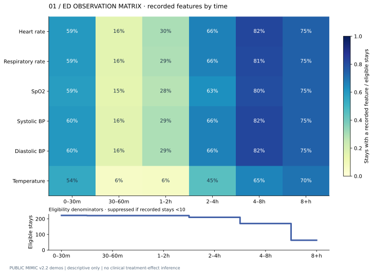
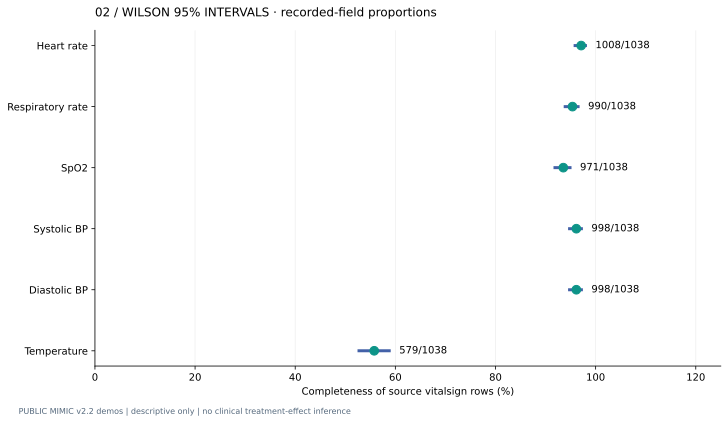
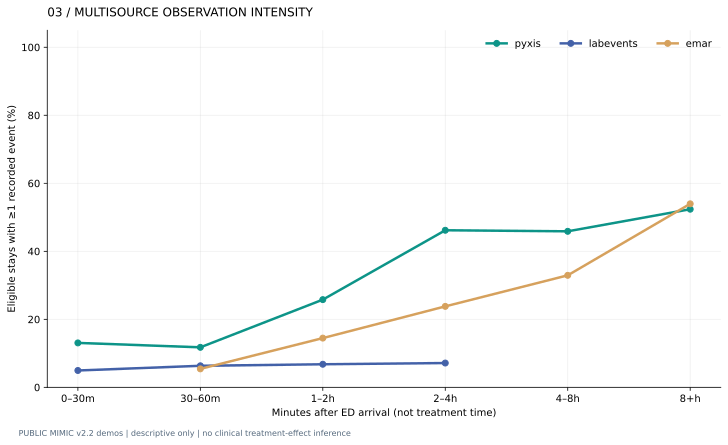
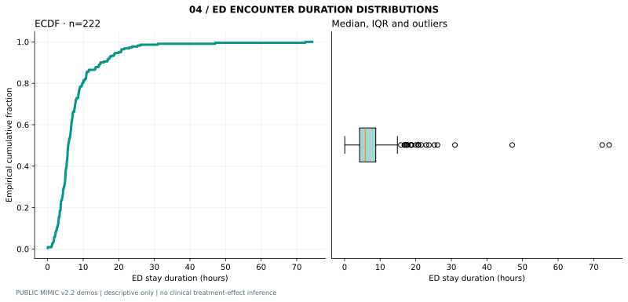
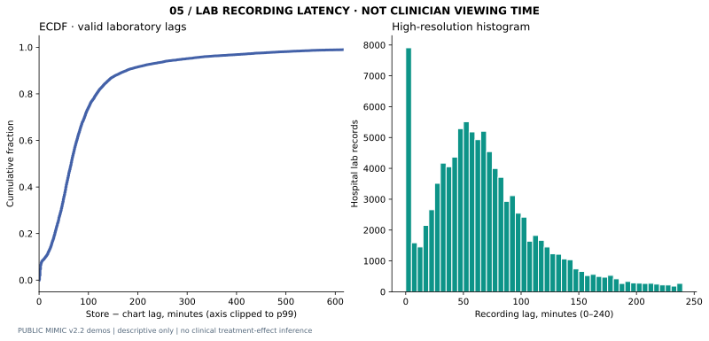
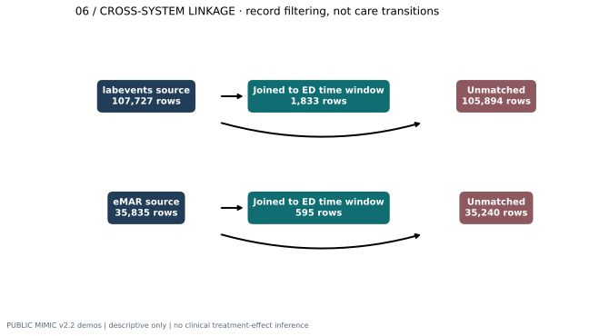
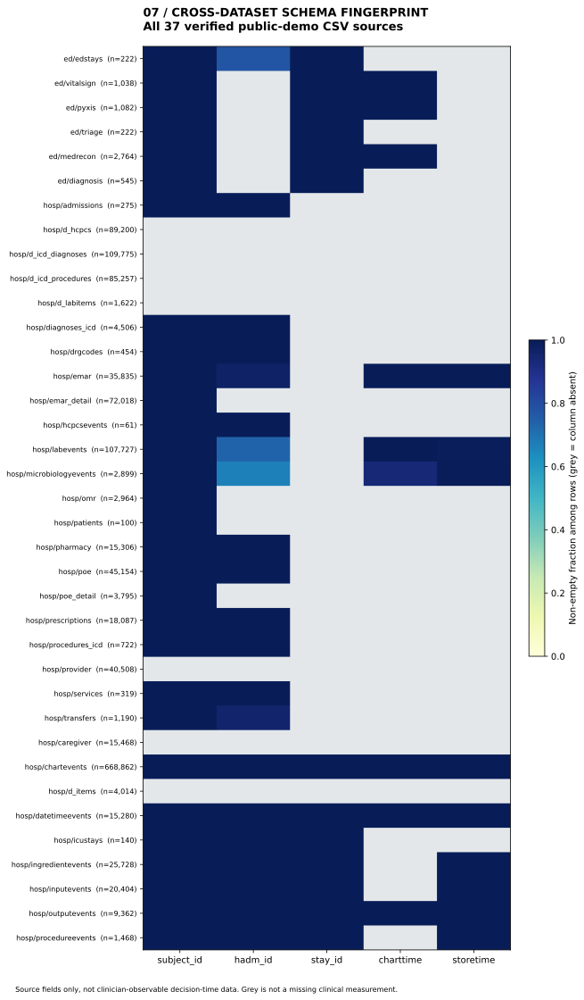

Observation Atlas · MIMIC v2.2 demoREPRODUCIBLE CLINICAL DATA ENGINEERING · PUBLIC MIMIC DEMOS
Observation Atlas
What was recorded, when, and how EHR events link across systems. Every figure is generated from real deidentified public-demo records with explicitly described denominators. Not a diagnosis system or causal treatment model.
ED stays222
ED patients64
Vital rows1,038
ED-linked lab rows1,833

01 Observation Atlas

02 Completeness Intervals

03 Temporal Recording

04 Encounter Duration

05 Lab Recording Lag

06 Cross Source Linkage

07 Schema Fingerprint